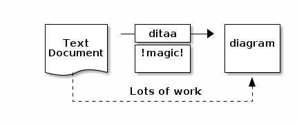

org mode cheat sheet
Table of Contents
This html file is export from an org file.
C-u M-x org-reload: fix #+ wrong argument
1 Section
1.1 Subsection
1.2 M-enter
2 Markup
Bold, italic, verbatim, strikethrough
- bulleted
- list
- items
C-C, C-LSheng's MessC-C, C-Oto open link- link to other files, need configuration
3 Tables
3.1 hyphen-tab automatically generate Next row in table
| Component | Selection | Price/yuan | Tax/yuan | Where |
|---|---|---|---|---|
| CPU | Intel Core i7-8700K 3.7GHz 6-core | 2,418.88 | N/A | Amazon.cn |
| CPU Cooler | be quiet! Drak Rock Pro 4 | 588.24 | 264.67 | Amazon.com |
| Motherboard | Asus Prime Z370-A ATX LGA1151 | 1,114.33 | 199.58 | Amazon.de |
| Memory | G.SKILL TridentZ F4-3200C16 8GB*2 | 1,359.12 | 269.74 | Amazon.com |
| Storage | Samsung 970 EVO M.2 NVMe 1TB | 2899.00 | N/A | jd.com |
| Video Card | MSI Gaming GeForce GTX 1080 AERO OC | 3,598.73 | 671.71 | Amazon.com |
| Case | Fractal Design R6 | 999.00 | N/A | jd.com |
| Power Supply | EVGA SuperNOVA G2 650W 80+ Gold Modular | 789.00 | N/A | jd.com |
4 Export to other formats
C-C, C-E
5 Source Code
<-s-tab short cutC-c C-,from emacs 9.2
C-c, 'start coding envirenment
int add(int a, int b) { return a+b; } int ans = add(1,1); printf("%d", ans);
C-C, C-Cto evaluate
6 LaTeX integration
- Characters: α → β
- \(O(n \log n)\)
7 Literate programming
8 Todo
Getting things done!
8.1 DONE explain todo lists
8.2 DONE cycle through states
8.3 TODO C-C, C-D: deadline
8.4 TODO M-Shift-Enter add another todo
8.5 TODO agenda
fb
9 Website/Blog
org2blogworldpressorg-publishwebsite
10 Twitter bootstrap
ox-twbsox-gfmgithub flavored markdown
11 Diagram
- artist-mode
- picture-mode
11.1 plantuml-mode
11.1.1 exmaple 1
11.1.2 example 2

11.2 ditaa
